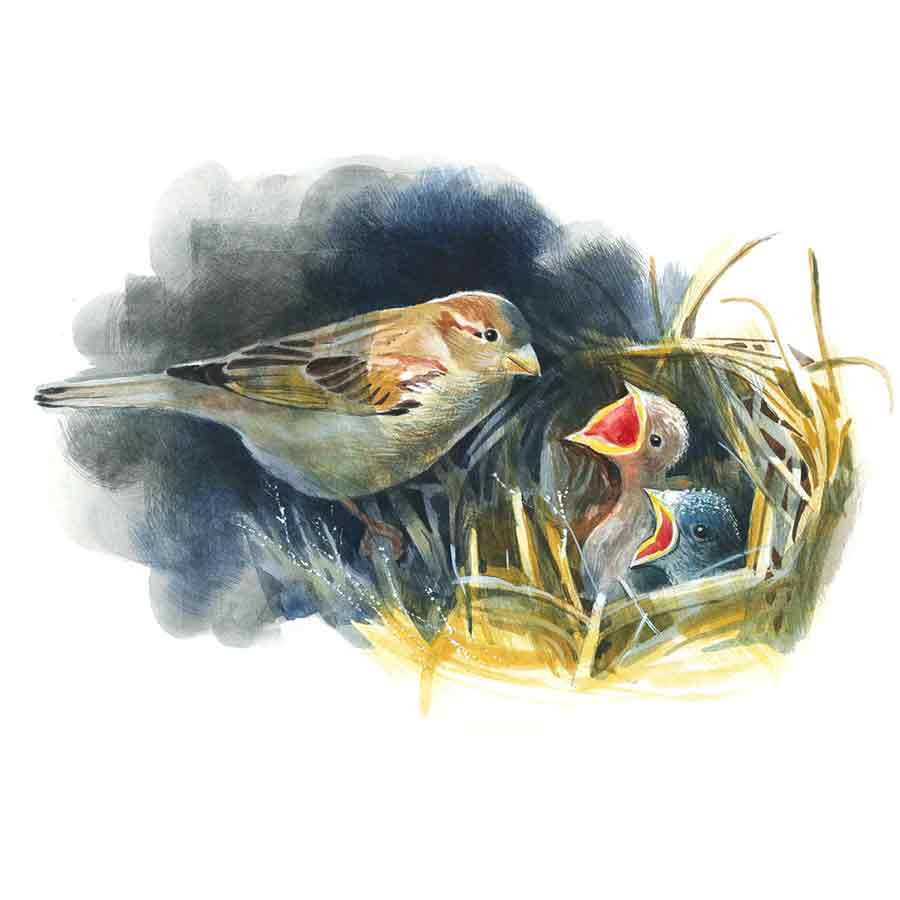

চড়ুই
শৌভিক চট্টোপাধ্যায়
কাল সারা রাত ঘুম হয়নি। ভোরের আলো ফোটার আগে থেকেই ব্যালকনিতে বসে আছি। রাত থেকে একটু-একটু করে সকাল হল। পৃথিবীর অন্ধকার দিক সূর্যের দিকে ফিরল। অন্ধকার ফিকে হতে হতে মিলিয়ে গেল সকালের কুয়াশা আর মিহি আলোর চাদরের নীচে। তার পর ধীরেসুস্থে ঘুমন্ত শহরের বুকে নিজের মতো করে নেমে এল সকাল। শুরু হল আর একটা নতুন দিন। একটা তারিখ বদলে শুরু হল নতুন তারিখ। সারা রাত ঘুম না হলে যখন এই পরিবর্তনের সাক্ষী হওয়া যায়, তখন সময়টাকে সমান্তরাল বলে মনে হয়। বোঝা-ই যায় না কখন বেমালুম একটা দিন পেরিয়ে আর একটা দিনের সূত্রপাত হয়ে গেল।
একটু আগে সকালের প্রথম নরম হলদেটে আলো গ্রিলের কারুকার্যের মধ্য দিয়ে বারান্দায় এসে পড়েছে, ছায়ার ফুল-কাটা নকশা তৈরি করেছে লাল টুকটুকে মেঝের উপর।
অঘ্রান শেষ হতে চলল। পরশু, নাহ, কালই তো সংক্রান্তি। মাসের শেষ। শহুরে দূষণ এড়িয়েও বাতাসে সেই প্রাচীন পৌষালি কাঁপুনি। কাল রাতে বিছানা ছেড়ে আসার সময় হালকা কম্বলটা জড়িয়েই এসেছিলাম। এটা বেশ গরম। এর নিজস্ব একটা ওম আছে।
ভোরের হলদেটে আলোটা সাদা হয়ে এল। রোজই হয়। প্রকৃতি তার আপন ছন্দে চলে। একচুলও হেরফের হওয়ার উপায় নেই। বিরাম নেই, বিশ্রাম নেই, অবসর নেই, মনখারাপ নেই। এই বিশ্ব-সংসার যেন বিরাট একটা ওয়ার্কশপ, সেখানে অবিরাম কর্মকাণ্ড সমানে চলেছে। এই পৃথিবীর ভাঙা-গড়া, অর্জন-বিসর্জনের সঙ্গে তার কণামাত্র সম্পর্ক নেই।
হঠাৎ কোথা থেকে একটা ছোট্ট চড়ুই বাইরে উড়ে বারান্দার গ্রিলে এসে বসল। শহরে চড়ুই ইদানীং বেশ কমে এসেছে। অনেক দিন পরে দেখলাম। চঞ্চল অথচ স্নিগ্ধ একটা পাখি। সব সময় যেন ব্যস্ত, কিছু না কিছু কাজের মধ্যে আছে।
বারান্দা থেকে ফুড়ুত করে উড়ে কলতলায় গিয়ে বসল। আবার উড়ে গেল গ্যারাজের সামনে। মুখে একটা সরু কাঠি। বোধহয় বাসা বাঁধতে চাইছে। ঘরের দেওয়ালের, বারান্দার কোণে বা গ্যারাজের সিলিংয়ে কোথাও সুবিধেমতো এক টুকরো খাঁজ পেলেই ও বানিয়ে ফেলবে ওর বাসা। গাছগাছালির চেয়ে একটা বাড়ির ভিতর বাসা বাঁধলে বিপদের আশঙ্কা কম থাকে বলে ওরা মনে করে বোধহয়। ঝড়ঝাপটা, দমকা হাওয়া বা সাপ, এ সবে আর কায়দা করতে পারে না। আমার বরাবর খুব ইচ্ছে হত গাছগাছালির ভিড়ের ভিতর একটা ছোট্ট বাড়ি, আর বাড়ির আনাচকানাচে উড়ে বেড়াবে ফিঙে, বুলবুলি, গাংশালিক, ছাতারে, চড়ুইয়ের মতো ছোট্ট ছোট্ট পাখির ঝাঁক। আমাদের তিন জনেরই পোষ্যের খুব শখ। আমার পাখি, প্রজাপতি, রঙিন মাছ, ফুলগাছের শখ, হ্যাঁ ফুলগাছকেও আমি পোষ্যই ভেবে এসেছি আজীবন।
প্রায় বছর কুড়ি আগে এ রকমই এক চড়ুই বাসা করেছিল আমাদের চিলেকোঠায়। তবে সে চড়ুই বারান্দায় বাসা করার আগে বাড়িতে এসেছিল আর এক পোষ্য।
পিঙ্কি আর ওর বাবার আবার খুব বিড়ালের শখ। আমার আবার বিড়ালটা খুব একটা ধাতে সয় না। এক দিন ও অফিস থেকে ফেরার সময় বাড়ির ঢোকার মুখে কালভার্টের উপর একটা এত্তটুকু বিড়ালছানা পড়ে থাকতে দেখে। ব্যস! তাকে তুলে নিয়ে বাড়িতে চলে এল। গা-ভর্তি ময়লা কাদা। বৃষ্টিতে ভিজে একেবারে সপসপে অবস্থা। লোম সব গায়ের সঙ্গে লেপ্টে গিয়েছে। রোগা হাড়গিলে শরীরটা নিয়ে ঠিক করে দাঁড়াতে পারছে না, চলতেও পারছে না। গলা দিয়ে আওয়াজ বেরোচ্ছে না; কোনও মতে চিঁ-চিঁ করছে। রুমালে জড়িয়ে সেই ছোট্ট প্রাণীটাকে নিয়ে ও বাড়ি ঢুকল।
“শুনছ, একে রাস্তায় পেলাম, বুঝলে!” জানাল আমাকে।
আমায় যদিও পিঙ্কি আগেই ছুট্টে এসে বলে দিয়ে গিয়েছে, “মা, বাবা কোত্থেকে একটা বিড়ালছানা নিয়ে এসেছে, দেখো!”
“একেবারে ঠান্ডায় কোলাপ্স করে যেত গো!”
“বেশ করেছ।”
দুম করে বাড়িতে একটা প্রাণী নিয়ে আসায় যে আমি খুব একটা খুশি হয়েছিলাম তা নয়, তবে ওর অবস্থা দেখে মায়া হল। আহা, অতটুকু একটা বাচ্চা! ওর মা ওকে ফেলে কোথায় চলে গেছে কে জানে।
“বুঝলে, একটু পরিষ্কার করে দিই বাচ্চাটাকে, কী বলো! একটু কিছু খেতে দিই। ও কালই স্টেডি হয়ে যাবে। তার পর যেখান থেকে তুলে এনেছি সেখানেই নিশ্চয় ওর মা-ও আছে...” পিঙ্কির বাবা সম্ভবত বুঝতে পেরেছিল, হঠাৎই বিড়াল রাখার প্রশ্নে আমার মনে একটু ‘কিন্তু’ আছে।
ইতিমধ্যে বিড়ালটা কুঁইকুঁই করতে করতে ডাইনিং টেবিলের তলায় ঢুকে গিয়েছে।
তার পর সেই বিড়ালটা পুরো চার বছর এ বাড়িতে ছিল। আমারও গা-সওয়া হয়ে গিয়েছিল। পিঙ্কির বাবার বুকের উপর ঘুমোতেন তিনি। পিঙ্কি ওর নামকরণ করল ‘কুটি’! তার তরিবত দেখলে লোকজনের মাথা ঘুরে যেত। বিড়াল বলতে অজ্ঞান বাপ-বেটিতে। মাসে মাসে ডাক্তার আসে। দামি দামি ওষুধ আসে। বিদেশি কোম্পানির শ্যাম্পু আসে, খাবার আসে। রান্নার মাসিকে বিড়ালের জন্য আলাদা রান্না করতে হয়। মাসি না এলে আমাকেই করতে হয়। বিড়ালটি যেখানে সেখানে বর্জ্য ত্যাগ করলেও কিচ্ছু বলা যাবে না।
“আঃ, এতে চিৎকার করার কী আছে! পিঙ্কি কি ছোটবেলায় হিসু করে দিত না! অবোলা জীব।”
“মা, কুটিকে কিছু বলবে না!”
কিছু বলেছি কি বলিনি, বাপ-বেটিতে একেবারে রে রে করে উঠত। তবে এ কথাই বা অস্বীকার করি কী করে, আমারও সারা দিন ওর সঙ্গে থাকতে থাকতে মায়া পড়ে গিয়েছিল। পিঙ্কি আর ওর বাবা যা পছন্দ করছে, ভালবাসছে, তাকে পছন্দ করতে পারলেই তো আমার আনন্দ! তবু অনিষ্ট করলে রাগ হত বইকি!
পিঙ্কির বাবা শৌখিন মানুষ। এলোমেলো অগোছালো কাজ-কারবার সে বরদাস্ত করে না একেবারে। জায়গার জিনিস জায়গায় থাকবে, পরিপাটি হয়ে থাকবে, এই ছিল তার সব সময়ের দাবি। কোনও কিছু স্থানচ্যুত হলেই সে বাড়ি মাথায় তোলে। কিন্তু বিড়ালের বেলায় ‘স্পিকটি নট’! সোফার কুশন আঁচড়ে ফাটিয়ে তুলো বার করে দিল। টেবিল থেকে লাফিয়ে নামতে গিয়ে কাচের ফুলদানিটা ভেঙে দু’টুকরো করে দিল। ফুলদানিটা আমাদের দু’জনেরই খুব প্রিয় ছিল। আমাদের প্রথম বিবাহবার্ষিকীতে মেজো মেসোমশাই দিয়েছিলেন। ইটালি থেকে আনা। মেসোমশাই এয়ারলাইন্সে ছিলেন, সারা পৃথিবী ঘোরা।
ও অফিস থেকে ফিরতে ওকে বলতে, ও কিছু ক্ষণ গুম হয়ে থাকার পর নিউটন আর তাঁর পোষ্যের বহুলপ্রচলিত গল্পটি পুনরায় শোনাল। তার পর বলল, “রাগ কোরো না! অবোলা জীব! ও কি আর ইচ্ছে করে করেছে, বলো!”
জীব যখন অবোলা, তখন আর রাগ করে কী লাভ!
এর পর এক দিন এমন একটা কাণ্ড ঘটাল, সে কথা ভাবলে আজও রাগ হয়ে যায়। আমাদের বেডসাইড টেবিলের উপর একটা গোল পেটমোটা ফিশ বোলে গোল্ডফিশ রাখতাম। ঢাকনার ভিতর দিয়ে আলো জ্বলত। জলের ভিতর একটা আভা তৈরি হত, আর তার ভিতরে খেলে বেড়াত দুটো গোল্ডফিশ। বেশ লাগত ওদের খেলা করা দেখতে। সে দিন পিঙ্কি কুটিকে কোলে নিয়ে খাটে বসে আছে। অকস্মাৎ কোনও পূর্ব ইঙ্গিত না দিয়ে বিড়ালটা গোল্ডফিশ দেখে প্রলুব্ধ হয়ে থাবা চালিয়ে দেয়। ফিশ বোল উল্টে পড়ে, কাচ ভেঙে বিছানা ভিজে আলোর বাল্ব ভেঙে গিয়ে যা-তা অবস্থা।
“শুনে রাখো, এই দুরন্ত বেড়াল আমি আর রাখব না!” পিঙ্কির বাবা বাড়ি ফিরতেই আমার ধৈর্যের বাঁধ ভেঙে গেল।
“বুঝলাম। চিন্তা কোরো না, আমি কালই তোমার জন্য নতুন গোল্ডফিশ আর ফিশ বোল আনিয়ে দিচ্ছি।”
আমার বিরক্তি বেড়েছিল, “আমি পিঙ্কি নই, পিঙ্কির মা। কী বলছ কী! বাচ্চাদের মতো ভোলানোর দরকার আছে কি? তুমি এই বিড়াল বিদেয় করো। আমি ক্লিয়ারলি বলে দিচ্ছি।”
বেশ কিছু ক্ষণ মৌনভাব বজায় রাখার পর পিঙ্কির বাবা বলল, “দেখো, ওরা তো অত বোঝে না। অবোলা। তুমি না চাইলে আমি এক্ষুনি ওকে বার করে দিয়ে আসছি। কিন্তু সেটাও কি তোমার ভাল লাগবে, বলো। কোথায় রাস্তায় রাস্তায় ঘুরবে। ঠিকমতো খাবারও জুটবে না হয়তো! অনিচ্ছাকৃত ভুলের জন্য ওকে ক্ষমাই করে দাও!”
আমিও আর কিছু বললাম না, পিঙ্কিও কাঁদো কাঁদো হয়ে বলল, “মা, কুটিকে তাড়িয়ো না প্লিজ়!”
এমনিতেও এই বেড়ালের জন্য ইতিমধ্যে আমাদের এক সঙ্গে ঘোরা-বেড়ানো প্রায় বন্ধ হতে বসেছে। কাউকে না কাউকে বাড়িতে থাকতেই হচ্ছে; বেড়ালকে নাকি একা বাড়িতে রাখা যাবে না। আর আমাদের শহর তখনও পেট-ফ্রেন্ডলি নয়। সকলেই যে আমাদের বেড়াল দেখে আদিখ্যেতা করবে এমন তো নয়ই, বরং উল্টোটাই হয় কখনও-সখনও।
এক দিন মিস্টার লাহিড়ীর বাড়িতে আমাদের ডিনারে নিমন্ত্রণ, ওঁর একমাত্র মেয়ে রুমকির দশ বছরের জন্মদিন। আমাদের তিন জনেরই উপস্থিতি একান্ত ভাবে আবশ্যক। অগত্যা আমাদের বেড়াল, কুটিও সঙ্গে গেল। বেড়ালের জন্য টুকটুকে লাল ভেলভেট দেওয়া ড্রেস এল, টুপি এল। তাকে পরানো হল। দেখতে বেশ মিষ্টি লাগছিল। ট্যাক্সিতে আমাদের তিন জনের কোলেই পালা করে তিনি বসে রইলেন। মিস্টার আর মিসেস লাহিড়ীরও নাকি এক সময় খুবই পোষ্যের শখ ছিল। স্বভাবতই ওরাও বেড়াল-সহ আমাদের উষ্ণ অভ্যর্থনা করলেন।
মিস্টার লাহিড়ী পিঙ্কির বাবাকে বললেন, “ঘোষালবাবু, কোলে করে রেখেছেন কেন, লেট ইট রোম ফ্রিলি! ওকে মেঝেয় ছেড়ে দিন, ও ওর মতো খেলা করুক।”
তেমনই করা হল, যদিও আমি চোখে চোখে রাখছিলাম। মাঝে এক বার রুমকিও কোলে তুলে নিল। মধ্যবিত্তের বাড়ির খাদ্য-আদরে বেড়ালটিও বেশ নাদুসনুদুস। পশুপ্রেমীদের আদরের উদ্রেক হওয়া অস্বাভাবিক নয়। দেখলাম, রুমকি বেড়ালটাকে হাতে করে এক টুকরো কেক খাওয়ানোর চেষ্টা করছে।
আমি সাবধান করলাম, “দিস না। কুটির কেক-পুডিং সহ্য হয় না একদম। অনর্থ করবে।”
কিছু ক্ষণ পরেই রুমকির কান্নার শব্দে দেখলাম, আশঙ্কা ফলে গেছে। কেক খাওয়ানোর অনতিবিলম্বেই বেড়াল বাবাজি রুমকির কোলে বসেই ওকে অকস্মাৎ আঁচড়ে দিয়েছে। আমাদের পোষ্য, আমরা বিব্রত হব। হওয়া স্বাভাবিক। আমাদের অস্বস্তি দেখে মিস্টার আর মিসেস লাহিড়ী আরও বিব্রত বোধ করছেন। অদ্ভুত ভাবে বেড়ালটির চোখমুখেও একটা কেমন-কেমন ভাব। আমি বকলাম। কিন্তু পিঙ্কির বাবা ওকে কোলে তুলে নিয়ে “আহা, অবোলা প্রাণী...” ইত্যাদি বলল।
আমি বিরক্ত হই। বাড়ি এসে বললাম, “মানছি অবোলা প্রাণী, কিন্তু শাসনটাও কি করা চলে না! তোমরাই তো বলো, ও নাকি খুব ইন্টেলিজেন্ট। সব কথা বোঝে। তা হলে ওকে বোঝানোও তো জরুরি যে কোনটা ভুল, কোনটা ঠিক। আর ওর মধ্যে একটা আক্রমণাত্মক অ্যাটিটিউড আছে। মানুষ যেমন সকলে সমান হয় না, তেমন পশুও তো সকলে সমান না-ও হতে পারে! ওকে একটু শাসন কোরো পারলে!”
কিন্তু আমার কথা কেউ কানে তুললে তো!
সে বছরই হেমন্তে আমাদের চিলেকোঠায় সেই চড়ুই বাসা বাঁধে। চিলেকোঠাটার সিলিংটা বেশ নিচু। একটু লম্বা মানুষ সোজা হতে পারে না। তবে আমার অসুবিধে হয় না। প্রায়ই গিয়ে আমি দেখে আসি, কী অদ্ভুত নৈপুণ্যে মুখে করে খড়কুটো জড়ো করে বানিয়ে তুলছে ওর সংসার। বাসাটার দিকে আমি চেয়ে থাকি। কী সুখী-সুখী ভাব!
এক দিন দেখলাম, ছোট্ট দুটি সাদা ডিম পেড়েছে। ভাগ্যিস আমাদের বাড়িতে এসে ডিম পাড়ল, তাই কাছ থেকে দেখতে পেলাম। কয়েক দিন পর দেখলাম, দুটো এত্তটুকু লালচে ধূসর ছানা চিঁ-চিঁ করছে, আর মা-পাখিটা মুখে করে কিছু একটা খাইয়ে দিচ্ছে। বাসাটা চিলেকোঠার জানালার পাশের একটা পরিত্যক্ত কাঠের আলমারির ভাঙা তাকের উপর করেছে।
আমি একটা চেয়ার রেখেছি ওখানে। দুপুরে সময় পেলে আমি গিয়ে বসি, নিবিষ্ট হই। খুব কাছ থেকে দেখি মা আর ছানাদের। দু’চোখ ভরে দেখি ওদের। আহা! কী তৃপ্ত ওরা!
সে দিন দুপুরে আমি চিলেকোঠায় গেছি, আমায় অনুসরণ করে বেড়ালটিও গেছে, যায় মাঝেমধ্যে। আমি বসার আগেই বেড়ালটি টুপ করে চেয়ার উঠল, তার পর চোখের নিমেষে ঝাঁপিয়ে পড়ল পাখির বাসার উপর। এ সময় মা-পাখিটিও থাকে ছানাদের সঙ্গে। বেড়ালের আকস্মিক আক্রমণের ভারে পাখির বাসাটা ছিঁড়েখুঁড়ে মেঝেয় পড়ল। ছানাদু’টির বয়স মাত্র কয়েক দিন। ওরা নিথর। সহজেই প্রাণ গিয়েছে ওদের। মা-পাখিটিও ওড়ার সুযোগ পেল না। বেড়ালটা থাবা মেরে মুখে তুলে নিয়েছে মা-চড়ুইটিকে। কুটিকে হিংস্র নরখাদকের মতো লাগছে, মুখে মা-পাখিটির রক্ত লেগে। কেন জানি না, আমি চিৎকার করে কেঁদে উঠলাম। সে দিন রবিবার ছিল। পিঙ্কির স্কুল নেই, পিঙ্কির বাবাও বাড়িতে। ওরা ছুটে এল।
সে দিন রাতে ঘুম আসছিল না, পিঙ্কির বাবা আমার কাউন্সেলিং করছিল, অবোলা জীব, প্রকৃতির নিয়ম এবং অনিচ্ছাকৃত ভুল আর সর্বোপরি খারাপ লাগলেও এই হল বাস্তুতন্ত্র আর খাদ্যশৃঙ্খলের নিয়ম।
আজ ভোরবেলায় সেই ঘটনা, সেই দৃশ্য বার বার ভেসে উঠছে চোখের সামনে।
“ওরা পিঙ্কিকে নিয়ে আসছে!”
পিঙ্কির বাবার ভেজা গলার আওয়াজে যেন কুড়ি বছর পর সংবিৎ ফিরল আমার।
গত পরশু রাতে আমাদের একমাত্র মেয়ে পিঙ্কি, মারা গিয়েছে। আমার কোল শূন্য করে মাত্র তিরিশ বছর বয়সেই চলে গিয়েছে ও। ওর কাল সিজ়ার হয়েছিল। ডাক্তার নাকি ঠিকমতো অপারেশন করতে পারেননি। পিঙ্কির যমজ ছেলে হয়েছিল, তবে তারাও মৃত। সিজ়ারের পরে পিঙ্কির ইন্টারনাল ব্লিডিং থামানো যায়নি। অতিরিক্ত রক্তপাতই পিঙ্কির মৃত্যুর কারণ বলে মনে করছেন ময়না তদন্তকারী চিকিৎসকেরা। ডাক্তার এবং হাসপাতালের তরফে গাফিলতি নাকি স্পষ্ট।
পুলিশ মামলা রুজু করেছে। মামলাটি অনিচ্ছাকৃত খুনের।